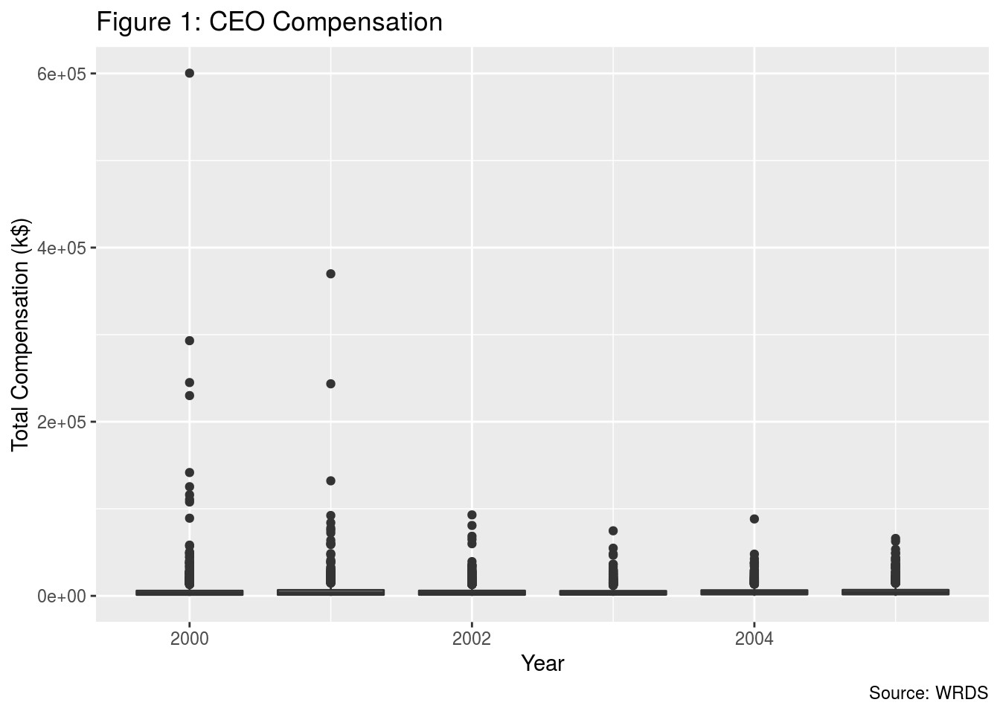

Github Repo: https://github.com/Byron-Nie/STA304-Final-Project
Data can be requested from Wharton Research Data Services (WRDS) at wrds.wharton.upenn.edu.
Please check Section V. References for further information.
In response to the corporate scandals in 2001 and 2002 (specifically Enron and WorldCom accounting scandals), the federal government set a new law that requires public companies to reinforce their board structure and improve audit quality, called The Sarbanes–Oxley Act of 2002 (SOX). We adopt difference-in-difference approach to the data of 1122 firms to understand the effect of new government supervision on CEO compensation. We show that board independence negatively affects the CEO compensation while the independences of other committees have no significant impact on CEO compensation.
CEO, Compensation, Board Structure, Board Independence, Policy, Economics, Finance, Difference-in-Difference
We often get the impression from the press that CEOs are high-net-worth individuals with a considerable annual salary. However, it is never a “sit back and relax” job after someone becomes a CEO of a firm. The CEOs of listed companies could also be vulnerable when they do not have a controlling share of the company that they can be voted out by the board if their performances are falling short or the “barbarians at the gate” force someone to replace the CEO as they get more controlling power over the board. Moreover, the compensations of the CEOs are primarily affected by the reviewing and approving of the compensation committee in the companies. Literature has argued that, for companies with a larger number of independent board members, the CEOs are more likely to be replaced when their performances are not as expected (Stein and Plaza, 2011). In a perfect world, a performance-based compensation plan helps the organizations to reach the balance between the cost of assessment and the perceived payments.
However, between the years 2000 and 2002, a series of large listed corporations in the U.S. committed crimes of fraud, which were mainly due to lack of supervision on conflict of interest and compensation plans within each company. Therefore, the Sarbanes-Oxley Act was carried out in July 2002 to reinforce government supervision on public companies. The act focuses on the robustness of independency of boards and it sets a minimum requirement on the proportion of independent directors on board to take the potentially riotous CEO compensation plan under control. Naturally, this gives rise to a question that sticks around for many years: Does board structure affect CEO compensation?
There are many works of literature and hypotheses that looked into this question, but it seems they never stop the debate and come up with a conclusion. Chhaocharia and Grinstein (2009, henceforth CG) argued in their paper that the CEO compensation will decrease by 17% if the firms that once were not compliant with the Sarbanes-Oxley Act in 2002 and other new rules of the major exchanges became compliant. However, Guthrie, Sokolowsky, and Wan (henceforth GSW) criticized CG in their revisit paper (2012, henceforth CG-R) that the above conclusion was unduly affected by two outliers, specifically Steve Jobs at Apple and Kosta Kartsotis at Fossil and therefore should not be included in the analysis. CG (2012) emphasized that “Apple is a prime example of the strong relation between compensation practices and board structure, and therefore should not be ignored.” In GSW’s rejoinder (2012), they questioned the robustness of CG-R’s result because of potential sample selection bias and more outlier effects.
Whether the board structure affects the CEO compensation positively or negatively, understanding the relationships between board structure and CEO compensation is still important for policymakers that it helps prevent CEO to extract rent or demand pays that beyond equilibrium level through their influences on the boards and the companies. Overall, it helps to address agency problems and to construct a healthier workplace. In our paper, we will make use of the Company financials, CEO compensation, and Director-related data requested from WRDS, with the time range from 2000 to 2005, to impose difference-in-difference models to show that board independence negatively affects CEO compensation, but the independences of other committees do not have significant relationships with the CEO pay.
The remainder of this paper is organized as follows. Section II describes the data and introduces the regression models on potential factors that would affect CEO compensation. Section III analyzes the variables and results. Section IV summarizes the ideas, states the conclusions, further criticizes the weakness, and reveals what should be done next.
As mentioned above, data of Company Financials, CEO Compensation data, and Director-related data from 2000 to 2005 were retrieved from WRDS and downloaded separately as three .dta files. Therefore, we used STATA for the data cleaning process.
Firstly, for CEO Compensation data, “CEOANN” in the original dataset represents if the executive is the CEO of the company in that specific fiscal year. For our research purposes that we only care about the CEO compensation, so data with “CEOANN” != “CEO” were removed.
Next, we merged the CEO Compensation data with Company Financials data by Ticker symbols and Years to make sure that each CEO is matched with his/her own company in that year. In this context, we have no choice but to remove companies with no Ticker symbol recorded because the names of companies could vary from the three datasets with minor changes, such as Apple Inc. v.s. Apple Computer, and there are over 80,000 names in our original dataset (therefore, 92 observations were deleted).
Thirdly, the Director-related data, also known as company governance data, includes all the information about executives, such as the classification of directors that states if the director is independent, employee, or linked. If the proportions of independent directors are higher than 50%, we regard the board as independent.
Same logic with the committee factors, e.g. if AUDIT_MEMBERSHIP = 1, it means the director is affiliated with the audit committee. We calculate the percentage of independent directors for Nominating Committee (Nom), Company Gov. Committee (CG), Compensation Committee(Comp), and Audit Committee(Audit) for each company in each year by its independent classification and non-membership of the committees. After, we generate dummy variables of Nom, CG, Comp, Audit that equal to 1 if the majority of directors in that committee is independent. The dummy variable of “after” equals 0 if the fiscal year is before 2002, vise versa.
Finally, we combine these three data into one dataset and conduct regression analysis with R Studio.
The target population of our regression is all the firms in the world. The frame is all the listed companies in the U.S. between 2000 and 2005, which contains 1247 distinct firms for the calculation of governance characteristics. However, we deleted the outliers in the frame. Therefore, the sample contains 1122 firms for the DID regression (Justification in Subsection “Model” below). To get a preliminary idea of what the dataset looks like, the first couple lines of data are shown below in Table 11:
| Year | Company | CEO | MKTVAL | Sales | ROA | MajIndep | Nom | CG | Comp | Audit | after |
|---|---|---|---|---|---|---|---|---|---|---|---|
| 2001 | AGILENT TECHNOLOGIES INC | Edward W. Barnholt | 10258.386 | 8396.000 | -5.084 | 1 | 0 | 0 | 1 | 1 | 0 |
| 2002 | AGILENT TECHNOLOGIES INC | Edward W. Barnholt | 6417.208 | 6010.000 | -12.459 | 1 | 1 | 1 | 1 | 0 | 1 |
| 2003 | AGILENT TECHNOLOGIES INC | Edward W. Barnholt | 11849.659 | 6056.000 | -28.426 | 1 | 1 | 1 | 0 | 0 | 1 |
| 2004 | AGILENT TECHNOLOGIES INC | Edward W. Barnholt | 12169.286 | 7181.000 | 4.946 | 1 | 1 | 1 | 0 | 0 | 1 |
| 2005 | AGILENT TECHNOLOGIES INC | William P. Sullivan | 15818.638 | 5139.000 | 2.089 | 1 | 1 | 1 | 0 | 0 | 1 |
| 2004 | AIRTRAN HOLDINGS INC | Joseph B. Leonard | 917.290 | 1041.422 | 1.353 | 1 | 0 | 0 | 0 | 0 | 1 |
To control for firm size, we take the natural log of market capitalization (MKTVAL) and the natural log of net sales (SALES). Total Compensation is composed of salary, bonus, other annual, restricted stock grants, and LTI (variable TDC1 in the dataset). Equity-based compensation is the Black-Scholes value of Option Grants (variable OPTION_AWARDS_BLK_VALUE in the dataset). Nonequity-based compensation is calculated as total compensation (TDC1) minus equity-based compensation. Market Cap is the year-end market value of the firms (variable MKTVAL in the dataset). SALES stands for net sales for a company in that year. ROA stands for return on assets, which is a measure of financial performance. Generally, the higher the better. Therefore, SALES and ROA are included as independent factors because we assume, naturally, a positive relationship between CEO Compensation and company performances. The dummy variable of Majority_Independent equals 1 if the majority of directors in a company in that year is independent. Dummy variables of Nom, CG, Comp, and Audit stand for the independence of the corresponding committee.
We first take a look at the regression result from simple multiple regression to get a general idea of the relationship between CEO compensation and the independent variables. Table 2 shows the regression results from simple multiple regression. Notice that this regression just serves as a comparison to the difference-in-difference models below. Figure 1 shows the boxplot of Total Compensation and tells us the distribution of pays. In addition, Figure 1 also helps identify potential outliers.
| term | estimate | std.error | statistic | p.value |
|---|---|---|---|---|
| (Intercept) | -17342.66661 | 1057.56491 | -16.3986782 | 0.0000000 |
| log(MKTVAL) | 2949.88953 | 190.15190 | 15.5133315 | 0.0000000 |
| log(SALES) | 53.31744 | 189.74388 | 0.2809969 | 0.7787232 |
| ROA | -31.06531 | 10.14222 | -3.0629690 | 0.0022020 |
| as.factor(Majority_Independent)1 | 271.61716 | 572.41981 | 0.4745069 | 0.6351571 |
| as.factor(Nom)1 | -294.23535 | 1083.99419 | -0.2714363 | 0.7860655 |
| as.factor(CG)1 | 30.33874 | 1129.38870 | 0.0268630 | 0.9785700 |
| as.factor(Comp)1 | 433.62659 | 617.12610 | 0.7026548 | 0.4823003 |
| as.factor(Audit)1 | -301.28134 | 539.80013 | -0.5581350 | 0.5767746 |
 As Figure 1 shows, some potential outliers are included in the dataset. The one on the top left corner in Figure 1 is the total compensation of Steve Jobs at Apple. To illustrate how volatile the payment structure of Steve Jobs was, the complete compensation structure of Steve Jobs is printed as bellow in Table 3. The tests for outliers are also conducted on the lowest and highest values of the dataset. The test results are shown in Table 4 and Table 5.
| Year | CEO | Total.Compensation | Salary | Bonus | Restricted.Stock | Option.Awards |
|---|---|---|---|---|---|---|
| 2000 | Steven P. Jobs | 600347.351 | 0.001 | 0.000 | 0 | 600347.35 |
| 2001 | Steven P. Jobs | 83996.129 | 0.001 | 43511.534 | 0 | 0.00 |
| 2002 | Steven P. Jobs | 93016.179 | 0.001 | 2268.698 | 0 | 89444.68 |
| 2003 | Steven P. Jobs | 74750.001 | 0.001 | 0.000 | 74750 | 0.00 |
| 2004 | Steven P. Jobs | 0.001 | 0.001 | 0.000 | 0 | 0.00 |
| 2005 | Steven P. Jobs | 0.001 | 0.001 | 0.000 | 0 | 0.00 |
| statistic | p.value | method | alternative |
|---|---|---|---|
| 0.4156313 | 1 | Grubbs test for one outlier | lowest value 0.001 is an outlier |
| 0.9999690 | 1 | Grubbs test for one outlier | lowest value 0.001 is an outlier |
| statistic | p.value | method | alternative |
|---|---|---|---|
| 41.5122548 | 0 | Grubbs test for one outlier | highest value 600347.351 is an outlier |
| 0.6912261 | 0 | Grubbs test for one outlier | highest value 600347.351 is an outlier |
It is not hard to tell that Steve Jobs received compensation packages with fairly large standard deviation. He received the highest compensation as well as the lowest one between the period of 2000-2005, which are both outliers. After considering the outliers for our model, we observe some changes to the significance of the regression results. Additionally, excluding outliers increases the \(R^2\) of our models.
Although CG (2012) argued in their paper that, what happened to Steve Jobs is a typical example of how CEO compensation would be affected by the board structure. As a matter of fact, board composures and internal control systems could be very different from company to company. Take Apple as an example, two of Steve Jobs’s closest friend, Campbell, and Ellison, were considered independent directors. It is not possible to consider every interlocking relationship. However, at least, excluding some outliers seems to be a better decision, both statistically and economically.
Therefore, we only include the data that are within 2 standard deviations of the mean of total compensation (TDC1). Additionally, we exclude the extreme cases that some CEO only took 1 dollar for their annual compensation.
To continue our study, we use the difference-in-difference approach (DID) to compare changes in compensation between firms that were already complying with the SOX and firms that were not complying with the act, which is the treatment group and the control group, respectively. DID is appropriate in social sciences researches. Besides, it helps identify the potential effects on the treatment group by comparing the outcomes of the control group over time. Specifically, we focus on four board structure variables that were required by SOX:
The regression model is as follow:
\(TotalCompensation_i = \beta_1 * log(MarketValue_i) + \beta_2 * ReturnOnAsset_i + \beta_3 * log(Sales_i) + \beta_4 * After_i + \beta_5 * CharacteristicsOfBoards_i + \beta_6 * After_i*CharacteristicsOfBoards_i\)
In the above specification, the variables \(\beta_1\), \(\beta_2\), \(\beta_3\) represent the average change in the CEO compensation if the log of market value, return on asset, and log of sales change by 1 unit, respectively. \(\beta_4\) represents the average change of CEO compensation after the release of the SOX. \(\beta_5\) represents the average difference of CEO compensation between firms that were already complying with the act and the firms that had not to comply with it. \(\beta_6\) represents the average difference of CEO pay between firms that were not complying with the board independence requirement but became compliant after the release of the SOX.
\(TotalCompensation_i = \beta_1 * log(MarketValue_i) + \beta_2 * ReturnOnAsset_i + \beta_3 * log(Sales_i) + \beta_4 * After_i + \beta_5 * MajorityIndependent_i + \beta_6 * After_i*MajorityIndependent_i\)
| term | estimate | std.error | statistic | p.value |
|---|---|---|---|---|
| log(MKTVAL) | 2357.79699 | 322.63773 | 7.3078774 | 0.0000000 |
| ROA | -41.21917 | 10.43567 | -3.9498333 | 0.0000795 |
| log(SALES) | 1600.03232 | 510.88267 | 3.1318978 | 0.0017491 |
| after | 441.18552 | 654.51076 | 0.6740692 | 0.5003055 |
| Majority_Independent | 2341.69966 | 613.94787 | 3.8141669 | 0.0001387 |
| after:Majority_Independent | -1779.99401 | 699.96706 | -2.5429682 | 0.0110281 |
[Put Appendix A here]
[Put Appendix B here]
[Put Appendix C here]
From the DID regression tables above, we observe a positive relationship between CEO compensation and firm size, and net sales, which means CEOs of larger or more profitable companies tend to get more pay. This is also empirically supported by some scholars (e.g. Newman and Mozes, 1999). Notice that with the lapse of time, the company size of each of the firms in our sample typically get larger. It forms another aspect to understand the reverse causal relationship between company performances and economic cycles. This consideration is supported by some scholars who show that CEO compensation gets higher as the firm size gets larger (Boyd, 1994).
In DID model for Majority_Independent (Table 6), if log(MarketValue) increases by 1 unit, CEOs get paid more by 2,357,797 dollars on average; if log(Sales) increases by 1 unit, the average increase of CEO pay is 1,600,032 dollars. The average decrease of CEO pay after a company became compliant with SOX is 1,779,994 dollars. There is an interesting fact that if a firm was compliant with the rules, the CEO of that firm gets 2,341,700 dollars more than his/her non-compliant counterpart. This could be the case that many firms were already informed of the release of the new rules and they had already changed their board structures for better management of the CEOs (GSW, 2012b). Therefore, it explains the difference in pays between CEOs from companies with fast reactions (which underlies good board structure) and companies that were not making adjustments to the new era.
We also observe that only the interaction terms for “Majority_Independent” are significant. Therefore, we arbitrarily say the independences of the Nominating Committee, Audit Committee, and Compensation Committee are irrelevant to the CEO pay.
By adopting the difference-in-difference approach, we examine the average difference of CEO compensation before and after the implementation of SOX. For example, the interaction term of “after” and “Majority_Independent” states the difference of CEO pay if a firm that did not have a majority of independent directors on its board transformed to a complaint firm after 2002. From the DID regression tables, we observe a positive relationship between CEO compensation and firm size, and net sales. The average decrease of CEO pay after a company became compliant with SOX is 1,779,994 dollars, which means their average pay became 16.4% lower than before.
With the difference-in-difference approach, we discover that (i) board independence negatively affects the CEO compensation, which justifies the managerial power hypothesis; (ii) Companies that were already compliant with SOX before 2001 typically paid more to their CEOs; (iii) No significant evidence that shows relationships between CEO pay and the independence of Compensation Committee, the independence of Audit Committee, or the independence of Nominating Committee.
The implication behind these is that if the board is filled with more independent directors, we would probably develop a more unbiased workplace and we could value CEOs with their contributions and performances instead of their relationships with other directors. A highly independent board also helps prevent the CEO from exploiting his/her power over the whole company. Besides, it reduces income inequality, at least to some extent, as the voice of the “eat the rich” movement becomes louder and louder that people do not agree with 1% of the world accumulating most of the world’s wealth. Therefore, we should reinforce the market and government supervision on the board composures of listed companies.
Although the managerial power hypothesis holds in our study, it is still questionable about the effectiveness of the data for independent committee members. Board composures and internal control systems could be very different from company to company. Some directors were just holding shares on behalf of the CEO. Therefore, the classification of directors in the original dataset could be compromised. Take Apple as an example, two of Steve Jobs’s closest friends, Campbell and Ellison, were considered independent directors.
Another drawback is we did not take firm-specific factors or market performances into consideration. The decrease in CEO compensation after 2002 could be caused by the downward trend of business cycles in some industries, or bear market, after the burst of the “Internet Bubble”. This could also be the reason that caused a low Adjusted \(R^2\).
Further study should focus on the effectiveness of independent committee members on CEO pay and their influence on the managerial power of the CEOs. The model could also add control variables for firm-specific factors and more potential independent variables.
Boyd, B. K. (1994). Board control and ceo compensation. Strategic Management Journal, 15(5), 335–344. https://doi.org/https://doi.org/10.1002/smj.4250150502
Chhaochharia, V., & Grinstein, Y. (2009). Ceo compensation and board structure. The Journal of Finance, 64(1), 231–261. https://doi.org/https://doi.org/10.1111/j.1540-6261.2008.01433.x
Chhaochharia, V., Grinstein, Y., Brav, A., Green, R., & Michaely, R. (2012). Ceo compensation and board structure – there is an effect after all .
Guthrie, K., Sokolowsky, J., & Wan, K.-M. (2012a). Ceo compensation and board structure revisited. The Journal of Finance, 67(3), 1149–1168. https://doi.org/https://doi.org/10.1111/j.1540-6261.2012.01744.x
Guthrie, K., Sokolowsky, J., & Wan, K.-M. (2012b). Ceo compensation and board structure – rejoinder (SSRN Scholarly Paper ID 2084630). Social Science Research Network. https://papers.ssrn.com/abstract=2084630
Newman, H. A., & Mozes, H. A. (1999). Does the composition of the compensation committee influence ceo compensation practices? Financial Management, 28(3), 41–53. https://doi.org/10.2307/3666182
Sarbanes-Oxley Act of 2002. (2002). https://www.govinfo.gov/content/pkg/COMPS-1883/pdf/COMPS-1883.pdf
Stein, G., & Plaza, S. (2011). The role of the independent director in ceo supervision and turnover (SSRN Scholarly Paper ID 1782707). Social Science Research Network. https://papers.ssrn.com/abstract=1782707
CEO compensation: Wharton Research Data Services. “Compustat Executive Compensation” wrds.wharton.upenn.edu, accessed 12/05/2020.
Company Financials: Wharton Research Data Services. “WRDS” wrds.wharton.upenn.edu, accessed 2020-12-05.
Director Data: Wharton Research Data Services. “RiskMetrics (ISS)” wrds.wharton.upenn.edu, accessed 12/05/2020.
StataCorp. 2017. Stata Statistical Software: Release 15. College Station, TX: StataCorp LLC.
RStudio Team (2018). RStudio: Integrated Development for R. RStudio, Inc., Boston, MA URL http://www.rstudio.com/.
Croissant Y, Millo G (2008). “Panel Data Econometrics in R: The plm Package.” Journal of Statistical Software, 27(2), 1-43. doi: 10.18637/jss.v027.i02 (URL: https://doi.org/10.18637/jss.v027.i02).
David Robinson, Alex Hayes and Simon Couch (2020). broom: Convert Statistical Objects into Tidy Tibbles. R package version 0.7.2. https://CRAN.R-project.org/package=broom
Hadley Wickham, Romain François, Lionel Henry and Kirill Müller (2020). dplyr: A Grammar of Data Manipulation. R package version 1.0.2. https://CRAN.R-project.org/package=dplyr
Lukasz Komsta (2011). outliers: Tests for outliers. R package version 0.14. https://CRAN.R-project.org/package=outliers
Wickham et al., (2019). Welcome to the tidyverse. Journal of Open Source Software, 4(43), 1686, https://doi.org/10.21105/joss.01686
Yihui Xie (2020). knitr: A General-Purpose Package for Dynamic Report Generation in R. R package version 1.30.
\(TotalCompensation_i = \beta_1 * log(MarketValue_i) + \beta_2 * ReturnOnAsset_i + \beta_3 * log(Sales_i) + \beta_4 * After_i + \beta_5 * IndepCompensationCommittee_i + \beta_6 * After_i*IndepCompensationCommittee_i\)
| term | estimate | std.error | statistic | p.value |
|---|---|---|---|---|
| log(MKTVAL) | 2382.018472 | 323.08924 | 7.3726332 | 0.0000000 |
| ROA | -41.879279 | 10.45214 | -4.0067676 | 0.0000627 |
| log(SALES) | 1742.635985 | 510.89241 | 3.4109647 | 0.0006536 |
| after | -1000.548220 | 258.36596 | -3.8726007 | 0.0001094 |
| Comp | 257.622505 | 606.39963 | 0.4248395 | 0.6709761 |
| after:Comp | 9.899342 | 678.36231 | 0.0145930 | 0.9883576 |
\(TotalCompensation_i = \beta_1 * log(MarketValue_i) + \beta_2 * ReturnOnAsset_i + \beta_3 * log(Sales_i) + \beta_4 * After_i + \beta_5 * IndepAuditCommittee_i + \beta_6 * After_i*IndepAuditCommittee_i\)
| term | estimate | std.error | statistic | p.value |
|---|---|---|---|---|
| log(MKTVAL) | 2393.78347 | 322.99487 | 7.4112121 | 0.0000000 |
| ROA | -42.23117 | 10.45577 | -4.0390304 | 0.0000547 |
| log(SALES) | 1764.90369 | 511.38970 | 3.4511913 | 0.0005638 |
| after | -1159.69873 | 264.94892 | -4.3770653 | 0.0000123 |
| Audit | -256.71274 | 553.78623 | -0.4635593 | 0.6429882 |
| after:Audit | 803.37545 | 612.57442 | 1.3114740 | 0.1897714 |
\(TotalCompensation_i = \beta_1 * log(MarketValue_i) + \beta_2 * ReturnOnAsset_i + \beta_3 * log(Sales_i) + \beta_4 * After_i + \beta_5 * IndepNominatingCommittee_i + \beta_6 * After_i*IndepNominatingCommittee_i\)
| term | estimate | std.error | statistic | p.value |
|---|---|---|---|---|
| log(MKTVAL) | 2382.46025 | 323.20169 | 7.3714350 | 0.0000000 |
| ROA | -41.88245 | 10.45139 | -4.0073573 | 0.0000625 |
| log(SALES) | 1713.22107 | 511.41658 | 3.3499522 | 0.0008156 |
| after | -958.47713 | 251.81864 | -3.8062199 | 0.0001432 |
| Nom | 685.87445 | 826.49873 | 0.8298554 | 0.4066690 |
| after:Nom | -636.43041 | 858.50343 | -0.7413254 | 0.4585388 |
Notice that the 2000 data for Agilent Technologies is missing because of the data record problem. The same issue could happen to some of the other data because of data record problems or data selection criterion that was specified in Subsection of “Data Cleaning”. In an ideal way, the table should contain the 2000-2005 data for each company↩︎